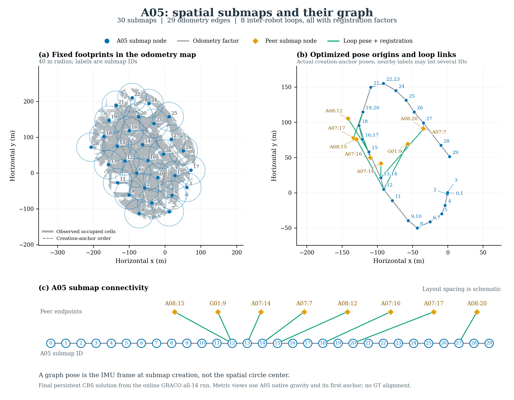

Latest online GRACO all-14 run: 30 A05 submaps, 29 odometry edges, and 8 retained inter-robot loops. All eight carry registration factors.

The circle centers define spatial support. The optimized graph variables use the original creation-anchor IMU frames. Several circles are created together, so their pose origins can coincide; they remain separate nodes. Panel (c) shows every node and edge without metric overlap. Peer endpoints belong to A07, A08 and G01; their other graph connections are omitted. CBS anchor/belief auxiliary variables and priors are outside this submap-constraint view.
No ground truth is used. The footprints and occupied cells come from the final A05 planner state; graph poses and loops match the final published CBS graph used to export the joint map. Panels (a) and (b) show unoptimized footprints and optimized poses, respectively. This is an inspection plot, not a change to the pipeline or a new experiment.